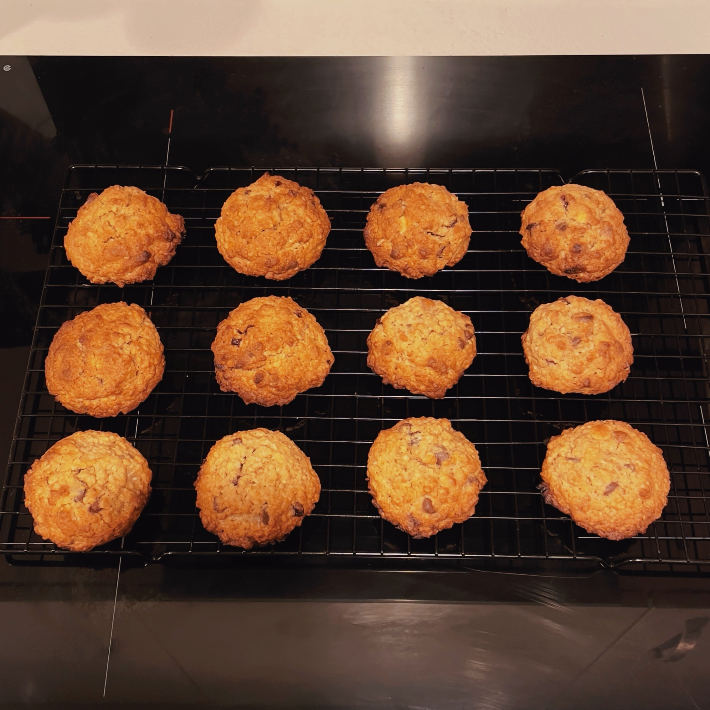

Pumpkin Spice Oat Cookies

This Christmas, I decided to make some oat cookies with a homemade pumpkin spice mix I had leftover from Halloween!
Oat cookies are so quick and easy to make, and they're always sooo tasty!
I followed this recipe from Taming Twins, but with a few differences:
- Instead of using unsalted butter, I just used salted butter because that's all I had in my fridge. I didn't add any extra salt to the recipe because of this.
- Instead of just adding ground cinnamon, I instead added 1/2 tsp of my own homemade pumpkin spice mix.
- Instead of adding raisins (I really hate raisins...) I added 75g of a mix of chocolate chips, caramel pieces and mini fudge pieces. These caramelised in the oven so nicely!
I was so happy with how the cookies turned out! They were soft, chewy and delicious, and went down an absolute treat on Christmas Day with our morning tea!